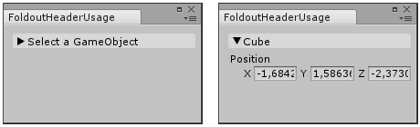
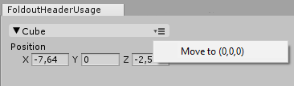

EditorGUI.BeginFoldoutHeaderGroup
public static bool BeginFoldoutHeaderGroup(Rect position,
bool foldout,
string content,
GUIStyle style = EditorStyles.foldoutHeader,
Action<Rect> menuAction,
GUIStyle menuIcon);
public static bool BeginFoldoutHeaderGroup(Rect position,
bool foldout,
GUIContent content,
GUIStyle style = EditorStyles.foldoutHeader,
Action<Rect> menuAction,
GUIStyle menuIcon);
Parameters
| foldout | The shown foldout state. | |
| content | The label to show. | |
| style | Optional GUIStyle. | |
| menuAction | The action that happens when you click the icon. | |
| menuIcon | Optional GUIStyle for icon. | |
| position | Rectangle on the screen to use for the control. |
Returns
bool The foldout state selected by the user. If true, you should render sub-objects.
Description 描述
Make a label with a foldout arrow to the left of it.
This is useful for folder-like structures, where child objects only appear if you've unfolded the parent folder. This control cannot be nested in another BeginFoldoutHeaderGroup. To use multiple of these foldouts, you must end each method with EndFoldoutHeaderGroup.

Create a foldable header menu that hides or shows the selected Transform.
// Create a foldable header menu that hides or shows the selected Transform position. // If you have not selected a Transform, the Foldout item stays folded until // you select a Transform.
using UnityEditor; using UnityEngine;
public class FoldoutHeaderUsage : EditorWindow { bool showPosition = true; string status = "Select a GameObject";
[MenuItem("Examples/Foldout Header Usage")] static void CreateWindow() { GetWindow<FoldoutHeaderUsage>(); }
public void OnGUI() { // An absolute-positioned example: We make foldout header group and put it in a small rect on the screen. showPosition = EditorGUI.BeginFoldoutHeaderGroup(new Rect(10, 10, 200, 100), showPosition, status);
if (showPosition) if (Selection.activeTransform) { Selection.activeTransform.position = EditorGUI.Vector3Field(new Rect(10, 30, 200, 100), "Position", Selection.activeTransform.position); status = Selection.activeTransform.name; }
if (!Selection.activeTransform) { status = "Select a GameObject"; showPosition = false; } // End the Foldout Header that we began above. EditorGUI.EndFoldoutHeaderGroup(); } }

Create a menu item action that moves the selected object to 0,0,0 when you click it.
// Create a foldable header menu that hides or shows the selected Transform position. // If you have not selected a Transform, the Foldout item stays folded until // you select a Transform.
using UnityEditor; using UnityEngine;
public class FoldoutHeaderUsage : EditorWindow { bool showPosition = true; string status = "Select a GameObject";
[MenuItem("Examples/Foldout Header Usage")] static void CreateWindow() { GetWindow<FoldoutHeaderUsage>(); }
public void OnGUI() { // An absolute-positioned example: We make foldout header group and put it in a small rect on the screen. showPosition = EditorGUI.BeginFoldoutHeaderGroup(new Rect(10, 10, 200, 100), showPosition, status, null, ShowHeaderContextMenu);
if (showPosition) if (Selection.activeTransform) { Selection.activeTransform.position = EditorGUI.Vector3Field(new Rect(10, 30, 200, 100), "Position", Selection.activeTransform.position); status = Selection.activeTransform.name; }
if (!Selection.activeTransform) { status = "Select a GameObject"; showPosition = false; } // End the Foldout Header that we began above. EditorGUI.EndFoldoutHeaderGroup(); }
void ShowHeaderContextMenu(Rect position) { var menu = new GenericMenu(); menu.AddItem(new GUIContent("Move to (0,0,0)"), false, OnItemClicked); menu.DropDown(position); }
void OnItemClicked() { Undo.RecordObject(Selection.activeTransform, "Moving to center of world"); Selection.activeTransform.position = Vector3.zero; } }